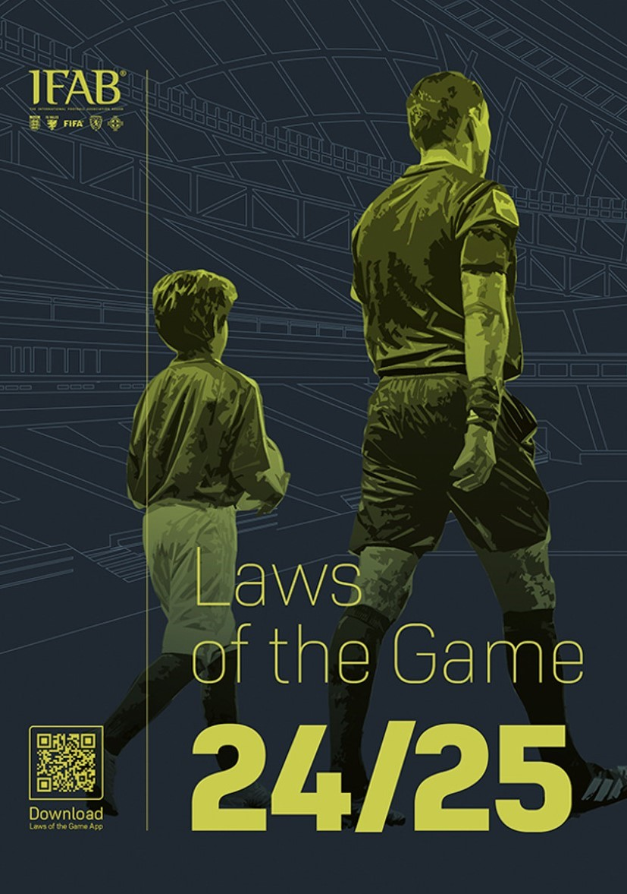

|  | |
|---|---|
| Laws of Football | Game Changer |
Hello! La Masia Academy is FC Barcelona's football academy. This academy is famous for developing young talents and turning them into professional players. The academy not only teaches football techniques, but also focuses on values like respect, humility, effort, ambition, and teamwork, for more info Click Here.
The "Learn Football" page at Manchester City offers educational programs for players, coaches, teams, and professionals. The page includes on-field training programs at the Football Academy in Manchester and provides opportunities to learn football in a manner similar to FC Barcelona's methodology, More Here
My Personal Football Coach offers a variety of resources to help individuals improve their soccer skills. It provides video-based training sessions, technical drills, and practice routines designed to enhance players' ball mastery, first touch, dribbling, turning, and running with the ball. The content is suitable for players of all ages and skill levels, from beginners to advanced players, For More Click Here